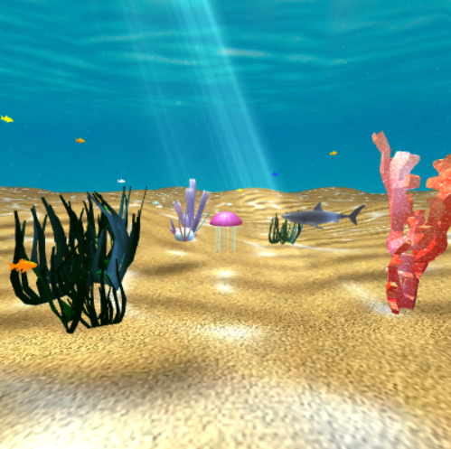

Catan, rebuilt from scratch
A full implementation of the Catan board game, built with a team under strict engineering discipline: test-driven development, boundary value analysis, EasyMock for isolating dependencies, and SpotBugs and CheckStyle enforced on every commit.
I worked on the core game model, classes like BoardHandler, Port, Hex, Robber, and GameModel, and wrote integration and unit tests as the codebase grew.

Guitar Hero, played on a Micro:bit
A Guitar Hero–style instrument running on bare embedded hardware. Guitar chord recordings get converted into C header arrays and played back through PWM — no audio codec, no sample library, just square waves shaped closely enough to sound like real chords.
Most of the real work was in the failure modes: linker errors, duplicate symbols, and the general chaos of pushing audio through a microcontroller that was never designed to make music.

An interactive underwater scene
A from-scratch 3D underwater world for a computer graphics course: OBJ model parsing, Phong lighting, texture mapping, caustic light patterns on the seafloor, volumetric light rays through the water, and a skybox cubemap holding it all together.
Sharks and goldfish swim on their own animation cycles, the jellyfish swims based on user input, and a full camera system lets you move through the scene, with both orthographic and perspective views.